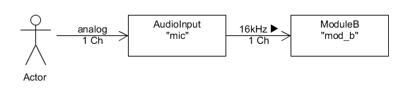

CERENCE SDK - AUDIO INPUT USER’S GUIDE
Cerence, Inc. provides this document without representation or warranty of any kind. The information in this document is subject to change without notice and does not represent a commitment by Cerence, Inc. The software and/or databases described in this document are furnished under a license agreement and may be used or copied only in accordance with the terms of such license agreement. Without limiting the rights under copyright reserved herein, and except as permitted by such license agreement, no part of this document may be reproduced or transmitted in any form or by any means, including, without limitation, electronic, mechanical, photocopying, recording, or otherwise, or transferred to information storage and retrieval systems, without the prior written permission of Cerence, Inc.
Cerence and the Cerence logo are trademarks or registered trademarks of Cerence, Inc. or its affiliates in the United States and/or other countries. All other trademarks referenced herein are the property of their respective owners.
Scope Of Document
The main scope of this SDK documentation is to serve as user guide for engineers who use the Cerence SDK to develop and deliver project-specific applications.
Overview
The Audio Input audio module captures audio data from a specific Audio Input Adapter and streams it to a subsequent connected audio module.
The C API documentation for an Audio Input Adapter is available at doc/api_reference/audio/audio_core/c/group___i_audio_input_adapter.html.
The adapter that is used by a specific Audio Input instance is determined in the corresponding JSON module configuration. Thereby the adapter is identified by a unique identifier that must correspond to the identifier that is used beforehand to register it at the audio adapter registry of the Audio Manager. Only audio adapters that are registered at the Audio Manager can be used. An instance of the configured adapter is requested at the Audio Manager when the Audio Input instance is created.
Note
The Audio Input audio module works only with a 16-bit PCM audio data stream.
Document Conventions
API call examples in this document are shown in C syntax.
Developing Applications
API Reference
The API reference documentation of the SDK Audio Input component is included in the Cerence SDK package
at doc/api_reference/audio/audio_module_input/. There is a separate folder for each supported programming language
in which the reference documentation can be accessed via the mainpage index.html.
The C API documentation is available at doc/api_reference/audio/audio_module_input/c/index.html.
Configuration API Reference
The configuration has to be done in the JSON format as specified in the configuration API reference:
- Overview
- IAudioInputConfig - Interface of the ‘AudioInput’ audio module configuration.
- ITopLevelAudioConfig - The top-level audio configuration structure.
- ITopLevelConfig - Interface for top-level configuration classes.
- IUserJsonConfig - Defines a verbatim block of json that is used by VoCon High as is.
- IAudioScenarioConfig - The audio scenario configuration.
- IAudioPluginConfig - The audio plug-in configuration.
- IAudioModuleConfig - The audio module configuration.
- IChunkPoolConfig - ChunkPool configuration.
- IAudioFormatConfig - The audio format configuration.
Creating And Configuring
The creation and configuration of an audio module is described in general in the Creating and Configuring Audio Modules chapter of the main Audio User’s Guide.
The configuration of the audio scenario and the Audio Input audio module looks like this:
...
{
"name": "exampleScenario",
"audiopaths": [ ["mic", "mod_b"]]
}
...
{
"type": "AudioInput",
"name": "mic",
"audio_format": { "uses": "16khz_1ch" }
}
...
Given the example from above activating the audio-scenario "exampleScenario" will create the Audio Input audio module named "mic".
The Audio Input audio module is linked into the audio stream following the definitions in the audio scenarios audio-paths section.
Finally there will be a system setup like shown in the following figure.
Version History
| REVISION | DATE | DESCRIPTION |
|---|---|---|
| 1.0 | 10.06.2019 | initial version |